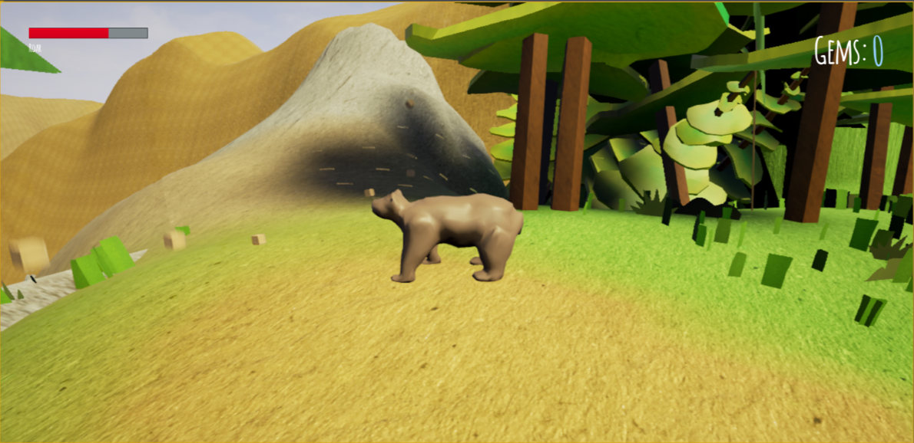
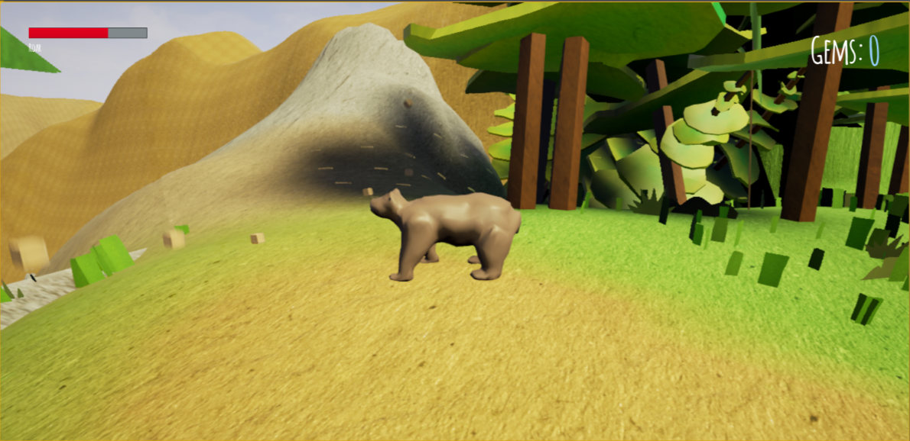

Press Kit (Flavour Text and USPs)
Kuthwala is the newest game from Toolbox Studios, featuring an expansive open world environment, with challenging puzzles dotted along the path to the final goal, the Temple! To add another layer of challenge and variety to our game, the player can swap between two different animals, each with unique abilities, which come in handy when tackling the plethora of puzzles scattered around the world! The unique art style of Kuthwala really makes the world come to life, with a papercraft style making the game appealing to all ages, and the open world allow everyone to play with a different style and a different story!
 
